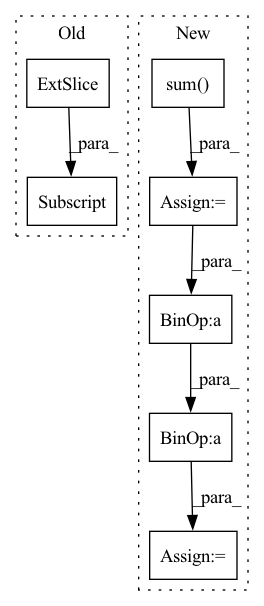

Pattern ID :40991
Before Change
_output = self._model.pool(feats)
_output = self._model.flatten(_output)
_output = self._model.classifier(_output)
grad: torch.FloatTensor = list(torch.autograd.grad(_output[:, _class] , feats))[0] // (N,C,H,W)
feats.requires_grad_(False)
weights: torch.FloatTensor = grad.mean(axis=-1, keepdim=True).mean(axis=-1, keepdim=True) // (N,C,1,1)After Change
_output: torch.FloatTensor = self._model.pool(feats)
_output: torch.FloatTensor = self._model.flatten(_output)
_output: torch.FloatTensor = self._model.classifier(_output)
_output: torch.FloatTensor = _output.gather(dim=1, index=_class.unsqueeze(1)).sum()
grad: torch.FloatTensor = torch.autograd.grad(_output, feats)[0] // (N,C,H,W)
feats.requires_grad_(False)
weights: torch.FloatTensor = grad.mean(dim=-2, keepdim=True).mean(dim=-1, keepdim=True) // (N,C,1,1)
heatmap: torch.FloatTensor = (feats * weights).sum(dim=1).clamp(0) // (N,H,W)
heatmap.sub_(heatmap.min(dim=-2, keepdim=True)[0].min(dim=-1, keepdim=True)[0])
heatmap.div_(heatmap.max(dim=-2, keepdim=True)[0].max(dim=-1, keepdim=True)[0])
heatmap = (to_numpy(heatmap).transpose(1, 2, 0) * 255).astype(np.uint8)
heatmap = cv2.resize(heatmap, dsize=_input.shape[-2:], interpolation=cv2.INTER_CUBIC)
if len(heatmap.shape) == 2:
heatmap = heatmap.reshape(heatmap.shape[0], heatmap.shape[1], 1)
heatmap = heatmap.transpose(2, 0, 1).astype(float) / 255 // (N, H, W)
return heatmap
def get_saliency_map(self, _input: torch.FloatTensor, _class: List[int]) -> torch.Tensor:In pattern: SUPERPATTERN
Frequency: 3
Non-data size: 7
Instances Fragment ID: 115617797
Project Name: ain-soph/trojanzoo
Commit Name: 2bf7c2a2e8acba2592ee17d60d1a59b7bd1bbfe5
Time: 2020-11-24
Author: ain-soph@live.com
File Name: trojanzoo/model/imagemodel.py
M Class Name: ImageModel
N Class Name: ImageModel
M Method Name: grad_cam(3)
N Method Name: grad_cam(3)
M Parent Class: Model
N Parent Class: Model
M File Name: trojanzoo/model/imagemodel.py
N File Name: trojanzoo/model/imagemodel.py
M Start Line: 206
M End Line: 222
N Start Line: 190
N End Line: 212
Before Change
for i in range(num_batches):
for j in range(num_labels):
intersection = (
(y_pred[i, j, :, :] .unsqueeze(0) & y_true[i, j, :, :].unsqueeze(0))
.float()
.sum((1, 2))
)After Change
for j in range(num_labels):
y_pred_local = y_pred[i, j, :, :].unsqueeze(0)
y_true_local = y_true[i, j, :, :].unsqueeze(0)
intersection = (y_pred_local & y_true_local).float().sum()
union = (y_pred_local | y_true_local).float().sum()
correct = (y_pred_local == y_true_local).int().sum()
total = y_true_local.numel()
trues = y_pred_local.float().sum() + y_true_local.float().sum()
self.iou_per_class[j] += 1 if union == 0 else (intersection / union)
self.f1_score_per_class[j] += (
1 if trues == 0 else (2 * intersection / trues)
)
self.pixel_accuracy_per_class[j] += correct / total
Fragment ID: 115617813
Project Name: biasvariancelabs/aitlas
Commit Name: e11bf3d1eaac800ad330870791cd1f5e251967bd
Time: 2021-09-17
Author: ivan.kitanovski@gmail.com
File Name: aitlas/base/metrics.py
M Class Name: SegmentationRunningScore
N Class Name: SegmentationRunningScore
M Method Name: update(3)
N Method Name: update(3)
M Parent Class: RunningScore
N Parent Class: RunningScore
M File Name: aitlas/base/metrics.py
N File Name: aitlas/base/metrics.py
M Start Line: 248
M End Line: 260
N Start Line: 256
N End Line: 269
Before Change
*([1] * len(self.group_dim)))
Z = Z.permute(*self.perm_inv).contiguous()
alpha = (1 - Z) ** (self.T - 1)
log_p = log_p + torch.log((1 - alpha) * acc[:, 0] / Z + alpha) + log_p_gauss
return log_pAfter Change
else:
Z = Z.view(-1, *self.not_group_shape)
alpha = (1 - Z) ** (self.T - 1)
log_p_a = torch.sum( torch.log((1 - alpha) * acc / Z + alpha),
dim=self.group_sum_dim)
if self.same_dist:
log_p_a = log_p_a * self.not_group_prod
log_p = log_p + log_p_a + log_p_gauss
return log_p Fragment ID: 115617809
Project Name: vincentstimper/resampled-base-flows
Commit Name: 2276007df3ec0b622880ec93964007be94002d00
Time: 2020-09-25
Author: vincent.stimper@gmail.com
File Name: larsflow/distributions.py
M Class Name: FactorizedResampledGaussian
N Class Name: FactorizedResampledGaussian
M Method Name: log_prob(3)
N Method Name: log_prob(3)
M Parent Class: nf.distributions.BaseDistribution
N Parent Class: nf.distributions.BaseDistribution
M File Name: larsflow/distributions.py
N File Name: larsflow/distributions.py
M Start Line: 227
M End Line: 276
N Start Line: 229
N End Line: 278